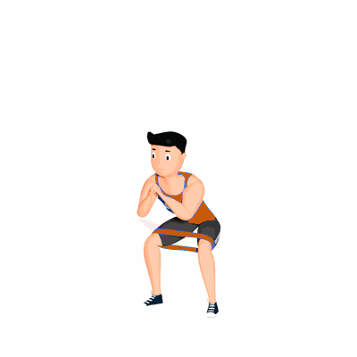

Agachamento e Salto com Faixa Elástica

O exercício visa fortalecer os glúteos médios, quadríceps e panturrilhas.
Ficha Técnica
Tipo: Funcional
Grupo Muscular: Perna
Aparelho: Nenhum
Músculos: Nenhum
Como realizar
- Coloque a faixa acima dos joelhos ou em volta dos tornozelos. 2. Assuma uma posição de um quarto de agachamento, com os pés apontados para a frente, na largura do quadril - como você faria para os passos da banda lateral. 3. Salte os pés de cada lado, cerca de dez a quinze centímetros, e volte imediatamente à posição inicial para uma repetição. 4. Continue o mais rápido possível, mantendo a boa forma. 5. Mantenha a parte superior do corpo imóvel durante todo o exercício. O tronco e a cabeça devem permanecer no lugar enquanto as pernas fazem todo o trabalho.
 RC STORE
RC STORE